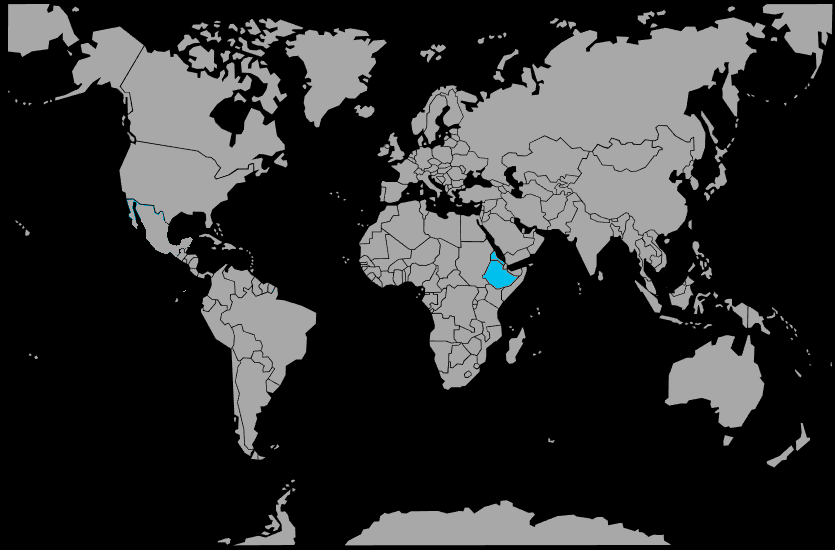

Systématique
- Ordre : Cichliformes
- Famille : Cichlidae
- Genre : Danakilia
- Espèce : Danakilia sp. « Shukoray »
Danakilia sp. Shukoray est un cichlidé africain rare en aquariophilie, originaire de zones arides de la dépression du Danakil, où il vit dans des eaux saumâtres à salées. [web:100][web:97]
Il s’agit d’une espèce de taille moyenne, d’environ 10 à 15 cm, au corps allongé et aux couleurs variables selon le sexe et la période de reproduction. [web:100][web:97]
Le comportement est typique d’un cichlidé territorial, particulièrement marqué en période de reproduction, tout en restant gérable dans un grand bac bien structuré. [web:97]
La cohabitation doit se faire avec des espèces supportant les mêmes conditions minérales et des températures élevées, en évitant les poissons trop petits pouvant être considérés comme des proies. [web:97][web:100]
Mode : la reproduction suit un schéma de cichlidé substricole, avec ponte sur un support ou dans une petite cavité et soins parentaux marqués; des pontes en aquarium ont été observées chez des amateurs. [web:94][web:97]
Les parents gardent et défendent activement les œufs, les larves et les jeunes alevins, qui doivent être élevés dans une eau aux paramètres similaires à ceux des adultes. [web:97]
Dimorphisme sexuel : les mâles sont généralement plus grands, plus colorés et présentent des nageoires plus développées que les femelles, qui restent plus modestes et moins vives en couleur. [web:97][web:100]
Espérance de vie : en captivité, Danakilia sp. Shukoray peut vivre plusieurs années (au moins 6 à 8 ans) lorsque les conditions minérales, la température et l’espace sont adaptés. [web:97][web:100]
L’espèce est associée à des lacs, rivières et mares temporaires de la dépression du Danakil (Éthiopie, Érythrée), caractérisés par une forte minéralisation, un ensoleillement intense et des températures élevées. [web:100][web:97]
Répartition
Origine naturelle :
- Dépression du Danakil, nord‑est de l’Afrique (Éthiopie, Érythrée).
- Zones côtières et intérieures autour de Shukoray et d’autres points d’eau locaux.
Les Danakilia sont confinés à cette région extrême, dans des milieux saumâtres ou salés soumis à de fortes variations de niveau et de température. [web:100]
Paramètres de maintenance
Température : 26 à 32 °C, avec une préférence pour les valeurs élevées stables. [web:97][web:100]
pH : 7,5 à 8,5, eau alcaline.
GH : eau dure à très dure, avec une salinité au moins légèrement saumâtre, en ajoutant des sels adaptés. [web:100][web:97]
Courant : faible à modéré, avec une forte oxygénation malgré les températures élevées.
Volume conseillé : au minimum 300 L pour un groupe, compte tenu de la taille adulte et du comportement territorial. [web:97]
Régime alimentaire
Régime : omnivore à tendance carnivore; il consomme divers invertébrés, petits organismes aquatiques et matières végétales disponibles dans ces biotopes extrêmes. [web:97][web:100]
En aquarium, il accepte les granulés de qualité pour cichlidés, complétés par des proies congelées ou vivantes (artémias, mysis, petits crustacés). [web:97]
Une alimentation riche mais bien fractionnée, associée à une eau propre et fortement minéralisée, est indispensable pour maintenir cette espèce délicate hors de son environnement d’origine. [web:97][web:100]